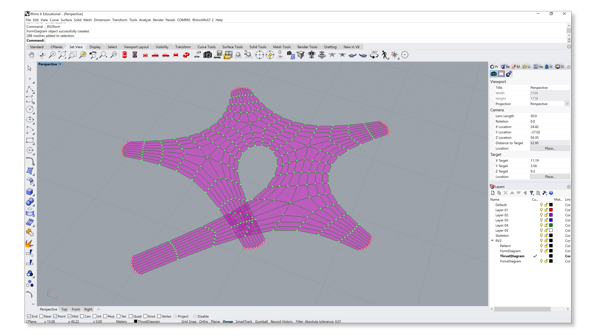
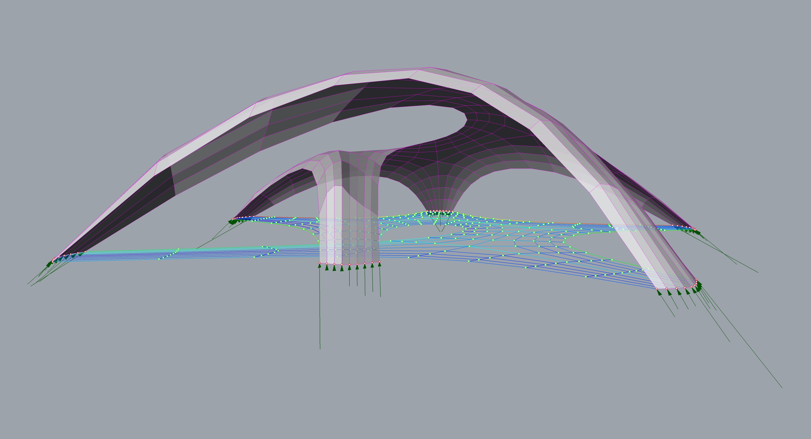
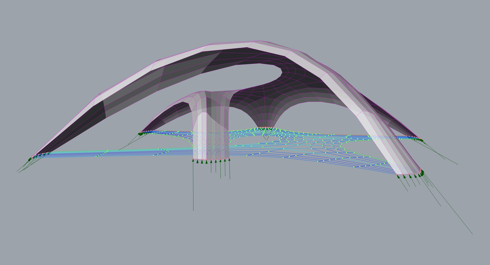

Skeleton
Skeleton is a new powerful feature of RV2 that enables fast and interactive generation of complex patterns. This example presents how to use the From Skeleton feature to generate the topology of pattern.
Skeleton features in RV2 are part of the compas_skeleton package.
0. Initialising
First, initialise the RV2 engine.

1. Pattern
From Skeleton takes a set of conencted lines as the input (not polylines). In Rhino, draw a network of connected lines, something like what is shown in the image below.
In the RhinoVAULT 2 drop down menu, select “Create Pattern”, then “From Skeleton.” Select the network of lines.
There are three main parameters of the skeleton that will define the overall shape of the pattern. For the first parameter, the user will need to interactively define how wide the pattern is going to be at the leaf vertices. Using the mouse, simply click at the location that is suitable for the size and shape of the skeleton.

For the second parameter, the user will need to interactively define how wide the pattern is going to be at the inetrior vertices.

For the third and the last parameter, the user will need to interactively define the inlincation of the edges at the leaf vertices.
Once the three main parameters have been defined, the user can explore various other skeleton features, which can facilitate in refining the skeleton further. In this example, we will use just the Subdivide function, which automatically subdivides and smoothes the pattern. Subdivide function can be applied repeatedly. Merge function un-subdivides the pattern.

In this example, Subdivide function was applied twice.

2. Boundary conditions
Once the pattern has been successfully created, the boundary conditions need to be defined.
In the RhinoVAULT 2 drop down menu, select “Define Boundary Conditions”, then “Identify Supports.”

By using the vertex selection mode ByContinuousEdges, select the edges at the leaf vertices, which we will define as the supports of the vault (shown in red).

In certain applications, additional refinment and tweaking of the opening gometries (and relaxation) can improve the speed of the equilibrium algorithms later on in the workflow. However, Update Openings is not applied in this example.
3. Form and force diagrams
Create form diagram
Once the boundary conditions have been defined, the Pattern can now be converted into a FormDiagram.
In the RhinoVAULT 2 drop down menu, select “Create FormDiagram.”
Create force diagram
Once the FormDiagram has been created, the ForceDiagram can now be created.
In the RhinoVAULT 2 drop down menu, select “Create ForceDiagram.”

4. Equilibrium
Horizontal equilibrium
Once the FormDiagram and ForceDiagram have been created, the horizontal equilibrium algorithm perpendicular-ises either or both diagrams, which converts them from dual to reciprocal diagrams.
In the RhinoVAULT 2 drop down menu, select “Horizontal Equilibrium.”

Vertical equilibrium
With the FormDiagram and ForceDiagram now reciprocal, the coordinates of the ThrustDiagram can be iteratively computed based on a desired z-max (target height) value.
In the RhinoVAULT 2 drop down menu, select “Vertical Equilibrium.”
 
